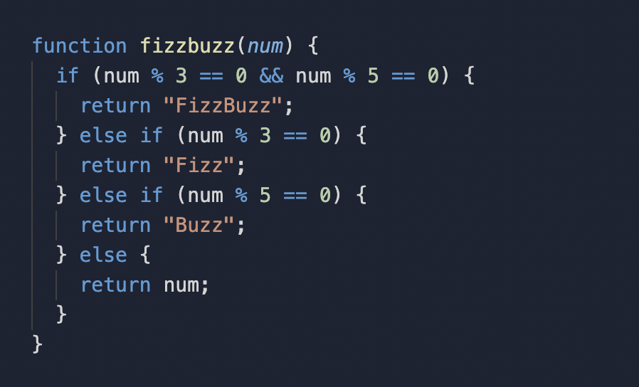

Sprint 4 - Tech Blog
The Problem Solving Process
What Was a Time I Got Blocked on a Simple Problem?
During this week’s JavaScript exercises I was asked to write code to pass a number of tests of increasing difficulty. Working through an exercise on manipulating JavaScript objects, I was tasked with creating new objects and adding properties to new and existing objects; in this case a husband and wife: Terah and Adam.
I got blocked when I was asked to make the new Terah object I had just created point back to the original Terah object that was in place at the start of the exercise. We were instructed not to alter this original object.
The test said: “Terah’s spouses spouse property should refer back to the terah.”. What? OK, so Terah’s spouse is Adam. So Adam’s “spouse property should refer back to the terah”. What is “the terah”? This seemed like an instance of the test message not being particularly clear, which can be part of the problem solving process, however in this case I inferred that it meant the original Terah object. Wait, how do I do that? Both objects are spelt the same: ‘terah’. How do I get my code to point to one terah in particular? This stumped me for quite a while.
I tried to think through the logic of what I was trying to achieve. I tested code in the Adam object (Terah’s spouse), I tested it below the Adam object. Neither of these worked.
I then reached out to my Dev Academy cohort to see if anyone could offer any pointers. I received many helpful messages that really got me thinking about the logic of what I was trying to achieve - in particular with respect to how JavaScript was reading the code I had written.
I was then able to pass the test and move on to the next one. It really was a simple problem, but I think sometimes it’s easy to get on the wrong track with your thinking and not be able to see other ways around or through. Given that part of this week’s focus was on problem solving, this was a great opportunity for me to practice my process.
What Was a Time I Solved a Problem in an Elegant Way?
One of the exercises I attempted this week was the classic programming exercise FizzBuzz. It asks the developer to write a program which prints out each number from 1-100; but for multiples of 3 print “Fizz” instead of the number, for multiples of 5 print “Buzz”, and for multiples of both 3 and 5 print “FizzBuzz”.
This exercise asked us to practice using if/else statements to replace the multiple with the correct word. For example, if the number is 6, change it to “Fizz”.
As with all of this week’s exercises I got stuck. This time it was with how to use the operators ‘% - divisible by’, ‘== - equal to’ and ‘&& - and’. I was mostly able to solve these by doing internet searches and I also reached out to my coach for help on the correct ‘equal to’ operator to use.
I was really happy with how I reached the solution for the “FizzBuzz” portion of the challenge, where multiples of both 3 and 5 are altered. It was one of those moments where I thought out the steps of what I was trying to do and understood the logic of how it should work. I searched for and found out about the && operator and used it in my code and…it worked! Sort of. Using console log I could see that that portion of code was correct but my coach hinted that JavaScript might need to read the overall if/else statement in a different order so that all of the tests would pass. I reorganised my code and ran it. Success!
I came up against many blocks this week that challenged my confidence in my understanding of the JavaScript material that we have covered so far. I felt I was getting tripped up easily, and that often even after using most of the problem solving techniques was not able to make any progress. Quite a frustrating affair. So it was nice to take a few little wins along the way and slowly (very slowly) feel like I was starting to grasp this material a bit better. I’m trying my best to embrace the process and am looking forward to the moments where all becomes clear.
How Confident Am I With The Following Problem Solving Techniques?
Pseudocode:
I tried using pseudocode on several occasions. I felt as though it was helpful for getting me thinking along the steps for what I was trying to achieve. However it was often incorrect and not overly helpful in terms of a final solution. I think with practice I’ll become better and it will become more useful to me.
Trying Something:
I found I was often going to this method. Particularly if I thought my solution was pretty much there, but that I might have slightly incorrect syntax or my code could be ordered differently.
Rubber Ducky Method:
I didn’t use this method much. I didn’t find that speaking the problem out loud brought me much clarity. I’ll keep practicing it though.
Reading Error Messages:
I found these really useful. It would direct my attention to part of the code that wasn’t working correctly and I could address it.
Console Logging:
I wasn’t very confident with how to console.log my code before this week’s exercises so it was a great chance to practice and I find it a really useful tool to see what your code is producing.
Googling:
This was my go-to. Often it would confuse me further by turning up more complex solutions than I was ready for but with practice my questions will get better, and I noticed they did over the course of the week.
Asking My Peers and Coaches For Help:
I tried to exhaust all other avenues of problem solving I could before reaching out to ask for help. For me it is easy not to do this as I tend to feel negative emotions about putting myself out there acknowledging that I can’t do something - so I am trying to practice remaining open to asking for help, as I think it is an extremely useful resource. It gives others a chance to reinforce what they know, and might help out other people who are struggling with the same thing.
Improving My Process With Reflection:
I wasn’t very good at taking the time to reflect on the wins and losses I had during the week. Something I can work on I think.